Comfort
LOOP
2.3 CLIMATE CLUSTER CARD
A redesigned dial, animated fan treatments, and a whole-house view that brings the rooms together.
Temperature, airflow, and the room's current state share the same face. Read the target, check the room, and reach the controls at a glance.

Breeze is the default. Silk and original offer two more treatments. Compare all three at the same 60% fan setting.
A small symbol beside the operating status makes the active preset easy to spot. The current card drawing keeps each preset clear, with continuous airflow and its own example settings.
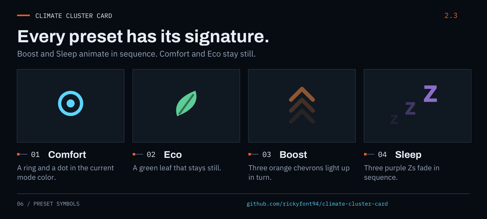

The examples retain their individual temperatures and fan settings. Preset behavior comes from your device and configuration.
Cool, Auto, Dry, and Fan keep the same controls in the same place, with a distinct status color and label.
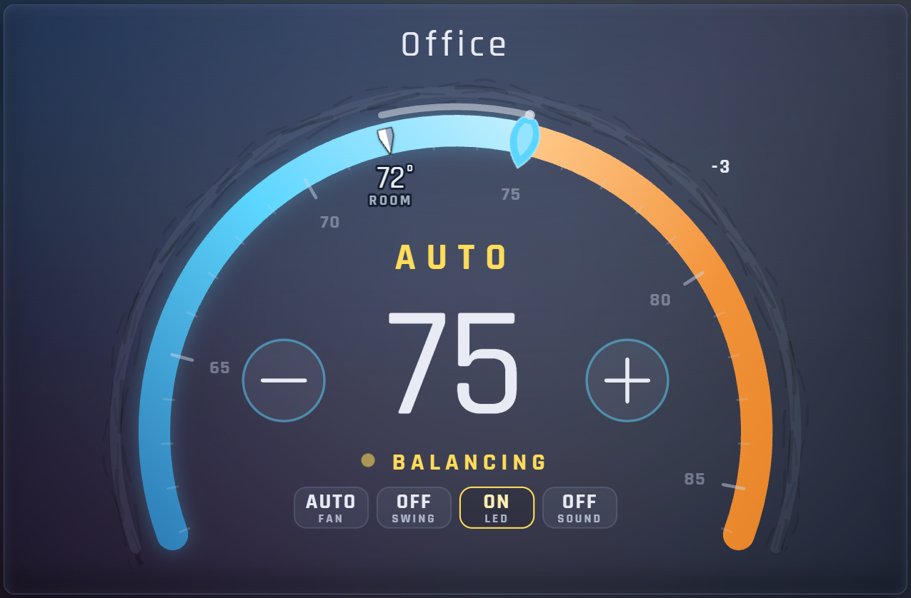
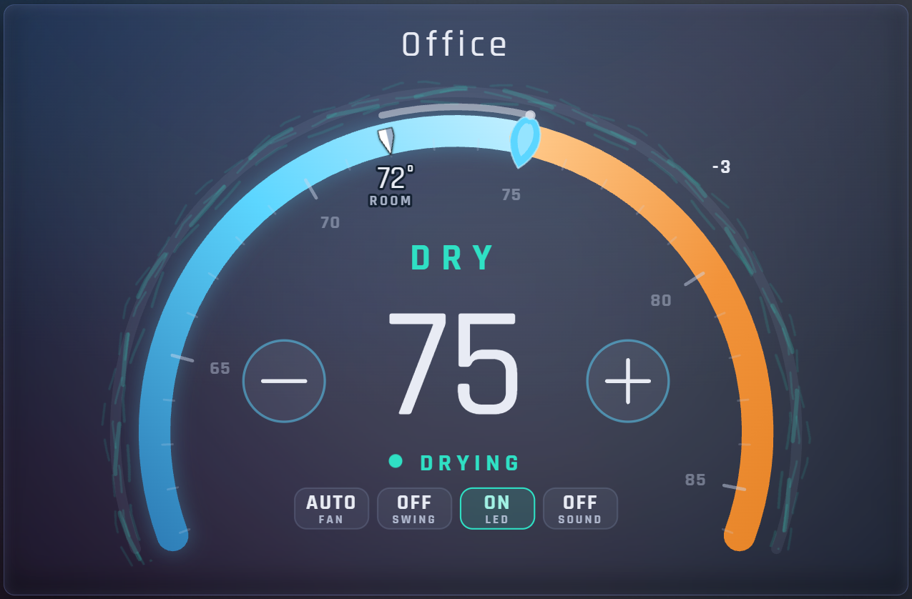
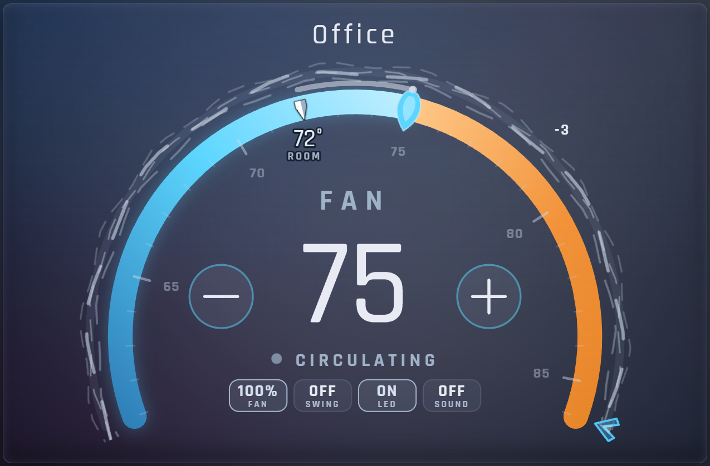
Read the average room temperature, compare individual rooms, and reach the shared controls without switching views.
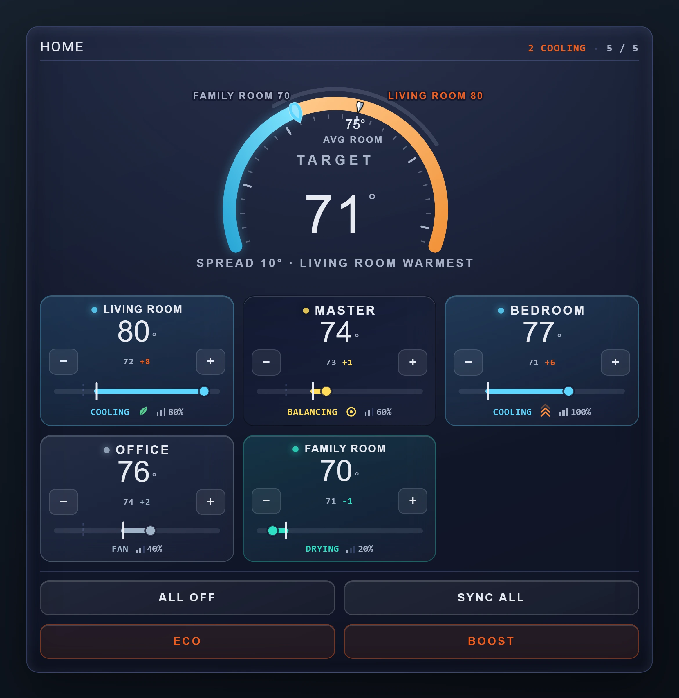
The horizontal layout puts the house gauge beside the room tiles, with shared actions in the same wide view.
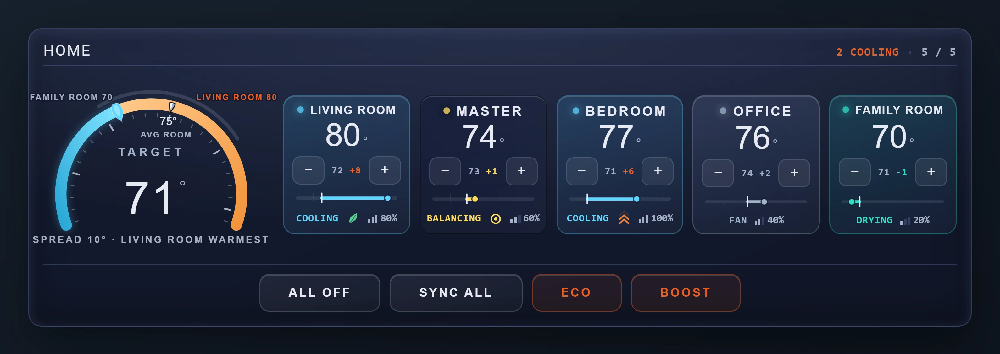
Each room's rail relates its temperature to its target. Fan level, preset, and operating status stay close to the reading they describe.
CONSISTENT DETAILS
Cool cyan, warm orange, restrained borders, and compact status labels carry from the single-room dial into the whole-house view.
The temperatures, fan levels, and selected options shown here are example settings from this installation. Your available modes, presets, and toggles depend on the climate entity and card configuration.
Select a numbered annotation to highlight its description. Use Enlarge to inspect the original media, or pause motion to compare the details at your own pace.